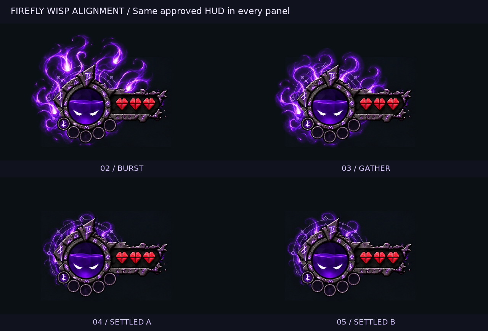

Firefly Soul-wisp pack
Five upload images · Six motion prompts · Reference work only
For each clip: choose Firefly Video → 16:9 → upload the indicated First and Last images → paste that section’s full prompt. Upload the PNG files, not this guide or the contact sheet.
Use the generated duration to evaluate motion, then retime to the target below. The documented default is 5 seconds at 24 fps; exact subsecond timing is an editing step. Keep prompt enhancement off for the first trial so it does not reinterpret the supplied instructions. These PNGs have opaque black backgrounds: use Screen blending for luminous compositing, not as an alpha export.
The approved HUD is excluded from the upload images. The separate compositing mask protects its crystal, stone, hearts and reserves; the upload images keep the painted smoke intact. The alignment sheet uses one unchanged below-full HUD plate for positioning only; it does not illustrate the resource state of each phase. Apply the supplied holdout when compositing generated clips so aura stays behind those areas.
Burst · target 0.45 s
Final sequence: 2.50–2.95 s
Open complete prompt
Locked camera, fixed composition. Painted 2D dark-fantasy Soul wisps on a pure black background. Bright violet cores pull broad translucent smoky tails through hollow curls, ending in sharp hooked tips. Motion feels supernatural, weighty and restless. Preserve the reference texture, colors and position. Keep the central opening and the space to its right clear. Animate the smoke continuously through curling and deformation. No camera movement, objects, text, faces, orange flames or thin ribbon effects.
From darkness, Soul energy erupts upward from the lower circular boundary. Luminous cores surge ahead as thick smoky tails unfurl into aggressive hooked curls, reaching the final image’s peak.
Gather · target 0.75 s
Final sequence: 2.95–3.70 s
Open complete prompt
Locked camera, fixed composition. Painted 2D dark-fantasy Soul wisps on a pure black background. Bright violet cores pull broad translucent smoky tails through hollow curls, ending in sharp hooked tips. Motion feels supernatural, weighty and restless. Preserve the reference texture, colors and position. Keep the central opening and the space to its right clear. Animate the smoke continuously through curling and deformation. No camera movement, objects, text, faces, orange flames or thin ribbon effects.
The eruption loses upward momentum. The wisps curl inward toward their circular origin, retaining their broad tails as their height and brightness decrease.
Settle · target 0.90 s
Final sequence: 3.70–4.60 s
Open complete prompt
Locked camera, fixed composition. Painted 2D dark-fantasy Soul wisps on a pure black background. Bright violet cores pull broad translucent smoky tails through hollow curls, ending in sharp hooked tips. Motion feels supernatural, weighty and restless. Preserve the reference texture, colors and position. Keep the central opening and the space to its right clear. Animate the smoke continuously through curling and deformation. No camera movement, objects, text, faces, orange flames or thin ribbon effects.
The remaining energy gathers into a compact aura. Large curls relax into smaller restless eddies; the glow gradually softens without disappearing.
Full idle · target 2.00 s
Final sequence: 4.60–6.60 s
Open complete prompt
Locked camera, fixed composition. Painted 2D dark-fantasy Soul wisps on a pure black background. Bright violet cores pull broad translucent smoky tails through hollow curls, ending in sharp hooked tips. Motion feels supernatural, weighty and restless. Preserve the reference texture, colors and position. Keep the central opening and the space to its right clear. Animate the smoke continuously through curling and deformation. No camera movement, objects, text, faces, orange flames or thin ribbon effects.
Maintain a compact aura at steady brightness. Individual wisps slowly coil, stretch and fold back into themselves, with gentle irregular motion.
Spend / linger · target 1.50 s
Final sequence: 6.60–8.10 s
Open complete prompt
Locked camera, fixed composition. Painted 2D dark-fantasy Soul wisps on a pure black background. Bright violet cores pull broad translucent smoky tails through hollow curls, ending in sharp hooked tips. Motion feels supernatural, weighty and restless. Preserve the reference texture, colors and position. Keep the central opening and the space to its right clear. Animate the smoke continuously through curling and deformation. No camera movement, objects, text, faces, orange flames or thin ribbon effects.
The compact aura remains alive and restless. Preserve its overall size and brightness while its smoky curls move naturally toward the final pose. No renewed eruption.
Dissolve · target 0.60 s
Final sequence: 8.10–8.70 s
Open complete prompt
Locked camera, fixed composition. Painted 2D dark-fantasy Soul wisps on a pure black background. Bright violet cores pull broad translucent smoky tails through hollow curls, ending in sharp hooked tips. Motion feels supernatural, weighty and restless. Preserve the reference texture, colors and position. Keep the central opening and the space to its right clear. Animate the smoke continuously through curling and deformation. No camera movement, objects, text, faces, orange flames or thin ribbon effects.
The luminous cores dim first. Their broad tails loosen, fragment into faint vapor and gradually disappear into black. End completely empty, without a flash.
Alignment check
Same fixed approved HUD artwork in all four panels. These are compositing checks, not changes to the game or interactive preview.

At 0.00–2.50 s and 8.70–10.00 s, hold the empty aura image. Liquid, eyes and refill remain separate from these wisp generations.
Preparation and modification notes · Adobe keyframe documentation · Adobe video defaults